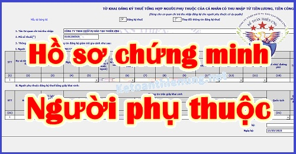

Quy định về Hồ sơ giảm trừ gia cảnh năm 2025 mới nhất: Hồ sơ chứng minh người phụ thuộc là con, ông bà, bố mẹ, bố mẹ vợ, chồng, cháu ruột, anh, chị, em ... theo quy định hiện hành.
Bài viết này Kế toán Diệu Tâm xin hướng dẫn làm Hồ sơ chứng minh người phụ thuộc giảm trừ gia cảnh cho người lao động trong Doanh nghiệp nhé.
-------------------------------------------------------------------------
Theo khoản 1 điều 9 Thông tư 111/2013/TT-BTC quy định:
“Người nộp thuế được tính giảm trừ gia cảnh cho người phụ thuộc nếu người nộp thuế đã đăng ký thuế và được cấp mã số thuế.
- Có hồ sơ chứng minh người phụ thuộc."
Địa điểm, thời hạn nộp hồ sơ chứng minh người phụ thuộc:
- Địa điểm nộp hồ sơ chứng minh người phụ thuộc là nơi người nộp thuế nộp bản đăng ký người phụ thuộc (Tức là nộp cho Doanh nghiệp)
-> Doanh nghiệp có trách nhiệm lưu giữ hồ sơ chứng minh người phụ thuộc và xuất trình khi cơ quan thuế thanh tra, kiểm tra thuế.
- Thời hạn nộp hồ sơ chứng minh người phụ thuộc:
-> Trong vòng ba (03) tháng kể từ ngày nộp tờ khai đăng ký người phụ thuộc (bao gồm cả trường hợp đăng ký thay đổi người phụ thuộc).
Quá thời hạn nộp hồ sơ nêu trên, nếu người nộp thuế không nộp hồ sơ chứng minh người phụ thuộc sẽ không được giảm trừ cho người phụ thuộc và phải điều chỉnh lại số thuế phải nộp.
------------------------------------------------------------------
Hồ sơ giảm trừ gia cảnh người phụ thuộc từng đối tượng như sau:
Căn cứ theo Điều 1 Thông tư 79/2022/TT-BTC ngày 30/12/2022 của Bộ tài chính Sửa đổi, bổ sung điểm g khoản 1 Điều 9 Thông tư số 111/2013/TT-BTC, có hiệu lực từ ngày 01/01/2023 quy định cụ thể như sau:
1. Hồ sơ người phụ thuộc là con:
- Con dưới 18 tuổi, hồ sơ chứng minh gồm::
+) Bản chụp Giấy khai sinh và bản chụp Chứng minh nhân dân hoặc Căn cước công dân (nếu có).
- Con từ 18 tuổi trở lên bị khuyết tật, không có khả năng lao động, hồ sơ chứng minh gồm:
+) Bản chụp Giấy khai sinh và bản chụp Chứng minh nhân dân hoặc Căn cước công dân (nếu có).
+) Bản chụp Giấy xác nhận khuyết tật theo quy định của pháp luật về người khuyết tật.
- Con đang theo học tại các bậc học theo hướng dẫn tại tiết d.1.3, điểm d, khoản 1, Điều này, hồ sơ chứng minh gồm:
+) Bản chụp Giấy khai sinh.
+) Bản chụp Thẻ sinh viên hoặc bản khai có xác nhận của nhà trường hoặc giấy tờ khác chứng minh đang theo học tại các trường học đại học, cao đẳng, trung học chuyên nghiệp, trung học phổ thông hoặc học nghề.
- Trường hợp là con nuôi, con ngoài giá thú, con riêng thì ngoài các giấy tờ theo từng trường hợp nêu trên, hồ sơ chứng minh cần có thêm giấy tờ khác để chứng minh mối quan hệ như:
+) Bản chụp quyết định công nhận việc nuôi con nuôi, quyết định công nhận việc nhận cha, mẹ, con của cơ quan nhà nước có thẩm quyền...
------------------------------------------------------------------------------------------
2. Hồ sơ chứng minh người phụ thuộc là vợ hoặc chồng:
- Bản chụp Chứng minh nhân dân hoặc Căn cước công dân.
- Bản chụp Giấy xác nhận thông tin về cư trú hoặc Thông báo số định danh cá nhân và thông tin trong Cơ sở dữ liệu quốc gia về dân cư hoặc giấy tờ khác do cơ quan Cơ quan Công an cấp (chứng minh được mối quan hệ vợ chồng) hoặc Bản chụp Giấy chứng nhận kết hôn.
- Trường hợp vợ hoặc chồng trong độ tuổi lao động thì ngoài các giấy tờ nêu trên hồ sơ chứng minh cần có thêm giấy tờ khác chứng minh người phụ thuộc không có khả năng lao động như:
+) Bản chụp Giấy xác nhận khuyết tật theo quy định của pháp luật về người khuyết tật đối với người khuyết tật không có khả năng lao động.
+) Bản chụp hồ sơ bệnh án đối với người mắc bệnh không có khả năng lao động (như bệnh AIDS, ung thư, suy thận mãn,..).
----------------------------------------------------------------------------------------
3. Hồ sơ giảm trừ gia cảnh cho cha đẻ, mẹ đẻ, cha vợ, mẹ vợ (hoặc cha chồng, mẹ chồng), cha dượng, mẹ kế, cha nuôi hợp pháp, mẹ nuôi hợp pháp hồ sơ chứng minh gồm:
- Bản chụp Chứng minh nhân dân hoặc Căn cước công dân.
- Giấy tờ hợp pháp để xác định mối quan hệ của người phụ thuộc với người nộp thuế như bản chụp Giấy xác nhận thông tin về cư trú hoặc Thông báo số định danh cá nhân và thông tin trong Cơ sở dữ liệu quốc gia về dân cư hoặc giấy tờ khác do cơ quan Cơ quan Công an cấp, giấy khai sinh, quyết định công nhận việc nhận cha, mẹ, con của cơ quan Nhà nước có thẩm quyền.
Trường hợp trong độ tuổi lao động thì ngoài các giấy tờ nêu trên, hồ sơ chứng minh cần có thêm giấy tờ chứng minh là người khuyết tật, không có khả năng lao động như:
+) Bản chụp Giấy xác nhận khuyết tật theo quy định của pháp luật về người khuyết tật đối với người khuyết tật không có khả năng lao động.
+) Bản chụp hồ sơ bệnh án đối với người mắc bệnh không có khả năng lao động (như bệnh AIDS, ung thư, suy thận mãn,..).
----------------------------------------------------------------------------------------------
4. Hồ sơ giảm trừ gia cảnh đối với các cá nhân khác không nơi nương tựa mà người nộp thuế đang trực tiếp nuôi dưỡng:
Như: Anh ruột, chị ruột, em ruột, ông nội, bà nội, ông ngoại, bà ngoại, cô ruột, dì ruột, câu ruột, chú ruột, bác ruột, cháu ruột (côn của anh ruột, chị ruột, em ruột)...
- Bản chụp Chứng minh nhân dân hoặc Căn cước công dân hoặc Giấy khai sinh.
- Các giấy tờ hợp pháp để xác định trách nhiệm nuôi dưỡng theo quy định của pháp luật.
|
Các giấy tờ hợp pháp là bất kỳ giấy tờ pháp lý nào xác định được mối quan hệ của người nộp thuế với người phụ thuộc như: - Bản chụp giấy tờ xác định nghĩa vụ nuôi dưỡng theo quy định của pháp luật (nếu có). - Bản chụp Giấy xác nhận thông tin về cư trú hoặc Thông báo số định danh cá nhân và thông tin trong Cơ sở dữ liệu quốc gia về dân cư hoặc giấy tờ khác do cơ quan Cơ quan Công an cấp. - Bản tự khai của người nộp thuế theo mẫu ban hành kèm theo Thông tư số 80/2021/TT-BTC ngày 29/9/2021 của Bộ trưởng Bộ Tài chính hướng dẫn thi hành một số điều của Luật Quản lý thuế và Nghị định số 126/2020/NĐ-CP ngày 19/10/2020 của Chính phủ quy định chi tiết một số điều của Luật Quản lý thuế có xác nhận của Ủy ban nhân dân cấp xã nơi người nộp thuế cư trú về việc người phụ thuộc đang sống cùng. - Bản tự khai của người nộp thuế theo mẫu ban hành kèm theo Thông tư số 80/2021/TT-BTC ngày 29/9/2021 của Bộ trưởng Bộ Tài chính hướng dẫn thi hành một số điều của Luật Quản lý thuế và Nghị định số 126/2020/NĐ-CP ngày 19/10/2020 của Chính phủ quy định chi tiết một số điều của Luật Quản lý thuế có xác nhận của Ủy ban nhân dân cấp xã nơi người phụ thuộc đang cư trú về việc người phụ thuộc hiện đang cư trú tại địa phương và không có ai nuôi dưỡng (trường hợp không sống cùng). => Bản tự khai của người nộp thuế -> là Mẫu Mẫu 07/XN-NPT-TNCN Bảng kê khai về người phụ thuộc phải trực tiếp nuôi dưỡng ban hành kèm theo Thông tư 80/2021/TT-BTC. |
- Trường hợp người phụ thuộc trong độ tuổi lao động thì ngoài các giấy tờ nêu trên, hồ sơ chứng minh cần có thêm giấy tờ chứng minh không có khả năng lao động như:
+) Bản chụp Giấy xác nhận khuyết tật theo quy định của pháp luật về người khuyết tật đối với người khuyết tật không có khả năng lao động.
+) Bản chụp hồ sơ bệnh án đối với người mắc bệnh không có khả năng lao động (như bệnh AIDS, ung thư, suy thận mãn,..).
---------------------------------------------------------------------
|
Quy định về việc xác nhận thu nhập của Người phụ thuộc: Theo Công văn số 2557/CT-TTHT ngày 17/1/2019 của Cục Thuế TP. Hà Nội: "Căn cứ các quy định nêu trên: - Trường hợp người nộp thuế đăng ký giảm trừ gia cảnh cho người phụ thuộc thì hồ sơ chứng minh người phụ thuộc thực hiện theo quy định tại Điều 9, Thông tư số 111/2013/TT-BTC của Bộ Tài chính. - Người nộp thuế phải cam kết và chịu trách nhiệm về việc người phụ thuộc không có thu nhập hoặc có thu nhập bình quân tháng không vượt quá 01 (một) triệu đồng."
----------------------------------------------------------------------
Theo http://www.mof.gov.vn Website Bộ Tài chính Hỏi: Xin hỏi, anh tôi làm hồ sơ giảm trừ gia cảnh là mẹ vợ, bà ngoài độ tuổi lao động và thu nhập dưới 1triệu/ tháng, anh tôi đã nộp đủ hồ sơ theo quy định trong thông tư 111/2013/tt-btc. -> Nhưng chi cục thuế yêu cầu phải có xác nhận của Phường thu nhập dưới 1tr/ tháng mới chấp nhận hồ sơ. -> Nhưng tôi lên Phường và Quận đều trả lời họ ko xác nhận, --> Vậy tôi xin hỏi Cơ quan Thuế yêu cầu như thế có đúng không?, nếu đúng anh tôi phải xin xác nhận ở đâu? Và phải làm hso như thế nào. Xin cảm ơn Trả lời: Ngày 26/11/2018: Căn cứ các quy định trên, trường hợp Độc giả đăng ký giảm trừ gia cảnh cho người phụ thuộc là mẹ vợ ngoài độ tuổi lao động và có thu nhập bình quân tháng trong năm từ tất cả các nguồn thu nhập không vượt quá 01 (một) triệu đồng thì hồ sơ chứng minh người phụ thuộc gồm: - Bản chụp Chứng minh nhân dân - Giấy tờ hợp pháp để xác định mối quan hệ của người phụ thuộc với người nộp thuế như bản chụp sổ hộ khẩu (nếu có cùng sổ hộ khẩu), giấy khai sinh theo quy định tại Điểm g.3 Khoản 1 Điều 9 Thông tư 111/2013/TT-BTC ngày 15/08/2013 của Bộ Tài chính. Trường hợp Độc giả đăng ký giảm trừ gia cảnh cho người phụ thuộc là mẹ vợ ngoài độ tuổi lao động thì không bắt buộc phải có xác nhận của UBND cấp xã nơi người phụ thuộc đang cư trú. Người nộp thuế phải cam kết và chịu trách nhiệm trước pháp luật về việc người phụ thuộc không có thu nhập hoặc thu nhập bình quân tháng trong năm từ tất cả các nguồn thu nhập không quá 01 (một) triệu đồng." |
--------------------------------------------------------------------------
5. Hồ sơ giảm trừ gia cảnh cho người nước ngoài:
- Cá nhân cư trú là người nước ngoài, nếu không có hồ sơ theo hướng dẫn đối với từng trường hợp cụ thể nêu trên thì phải có các tài liệu pháp lý tương tự để làm căn cứ chứng minh người phụ thuộc.
Như vậy:
- Cá nhân là người nước ngoài muốn được giảm trừ gia cảnh người phụ thuộc thì phải là cá nhân cư trú.
- Hồ sơ giảm trừ gia cảnh người phụ thuộc cho người nước ngoài thì vẫn thực hiện theo hướng dẫn như trên.
------------------------------------------------------------------------
Sau khi đã xác định được người nộp thuế đủ điều kiện và Hồ sơ chứng minh người phụ thuộc, các bạn tiến hành đăng ký người phụ thuộc.
----------------------------------------------------------------------------------------
Các bạn muốn học kê khai thuế, Quyết toán thuế ... có thể tham gia: Lớp học kế toán thuế online thực hành chuyên sâu tại Kế toán Diệu Tâm.
